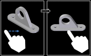
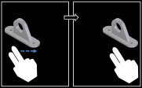
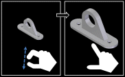

Using the Mobile Viewer
After you save a Solid Edge model as a viewer document and transfer the document to your mobile device, you are ready to begin viewing it.
Starting the application
Tap the Mobile Viewer icon to begin.
Managing files
Tap the File Manager icon to view the Solid Edge models on your viewer.
You can filter the display of your files to view only certain types of documents:
Part models.
Sheet Metal models.
Assembly models.
Draft documents.
All Solid Edge documents.
To view a model, tap it.
Manipulate the view of the model
Double-tap anywhere in the graphic display to fit the model to the view.

Drag one finger across the display to rotate the view.

Drag two fingers locked together to pan the view.

Move two fingers toward each other to zoom in.
Move two fingers apart to zoom out.
Select a component, then tap Hide to hide it.
Tap Show to display hidden components. You can show all hidden components.
Tap Show, then Show Only to hide all components except those selected.
Selecting
-
Tap a component to select it, and tap it again to de-select it.
-
While one component is selected, you can tap more to select them as well.
-
Tap once in empty space to de-select all of the selected components.
Component information
-
While one component is selected, tap Information to see information about it.
-
Tap another component, and the first component is de-selected, the new component is selected, and information about the new component is displayed.
-
Tap in free space to hide the information display.
View options
Tap Options to change the colors of the gradient display of the foreground and background or to change the color used to display a selected component.
Share
or Tap Share to email or save an image of the screen. While the Share options are displayed, you can continue to manipulate the display before you select a share option.